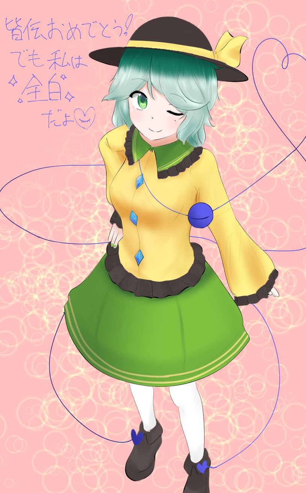
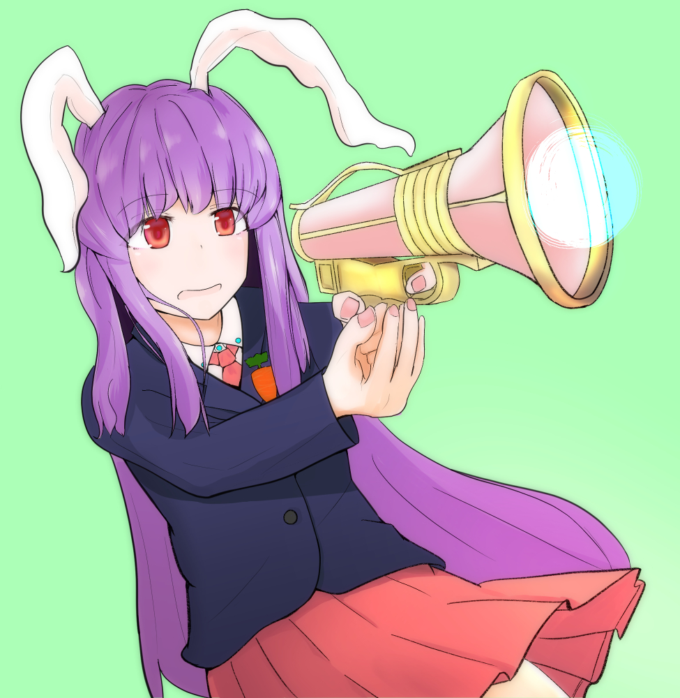
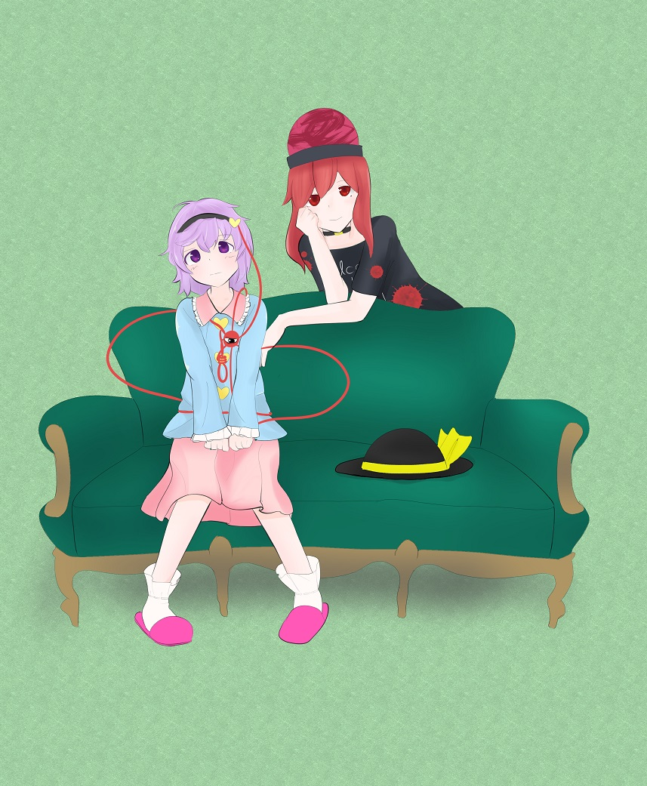
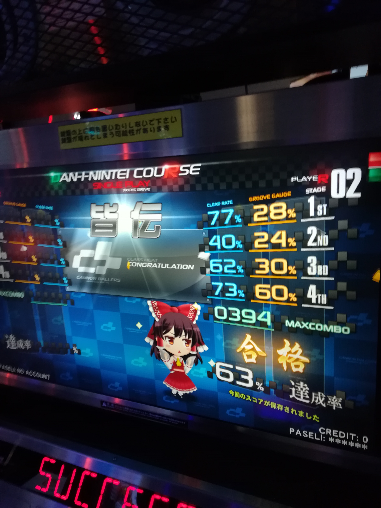
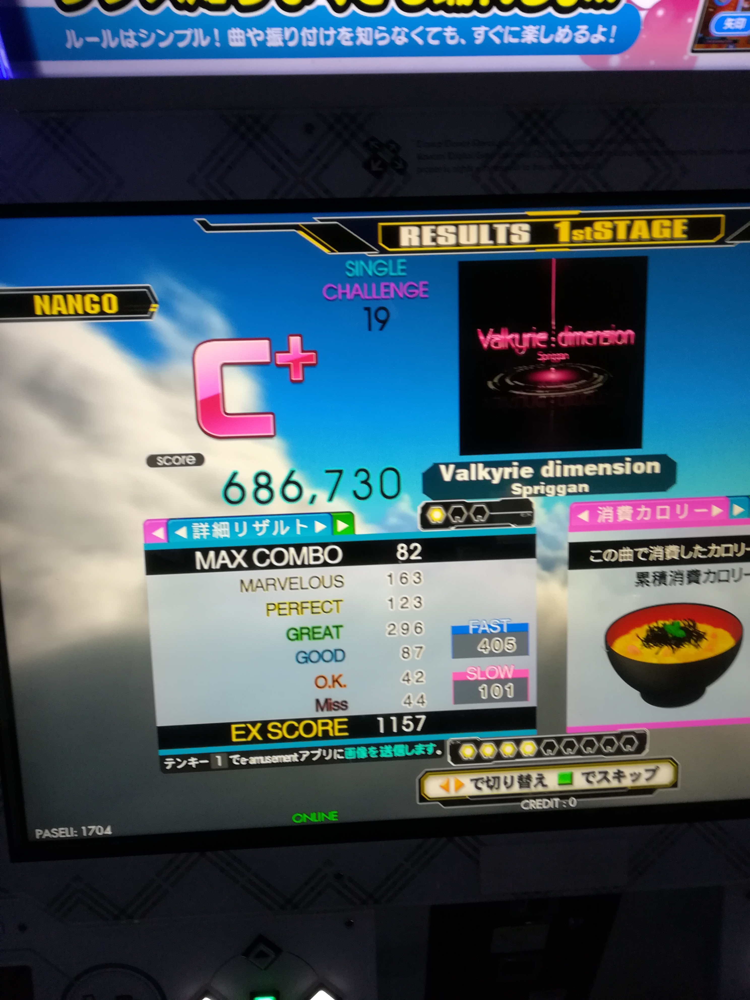

<!DOCTYPE html>
<html lang="ja">

<head>
  <meta charset="UTF-8">
  <meta name="viewport" content="width=device-width, initial-scale=1.0">
  <meta http-equiv="X-UA-Compatible" content="ie=edge">
  <title>nerewid is babbling</title>
  <link rel="stylesheet" href="https://unpkg.com/ress/dist/ress.min.css">
  <link rel="stylesheet" href="style/style.css">
  <link rel="stylesheet" href="style/lightbox.css">
  <link href="https://fonts.googleapis.com/css?family=Noto+Sans+JP:100,500,900&amp;subset=japanese" rel="stylesheet">
  <script src="https://ajax.googleapis.com/ajax/libs/jquery/1.11.1/jquery.min.js"></script>
  <script src="js/jquery.inview.min.js"></script>
  <script src="js/lightbox.js"></script>
</head>

<body>
  <section class="hero fd-in" id="hero">
    <h1>nerewidとは何？</h1>
    <p>説明します</p>
    <a href="https://twitter.com/nerewid">twitter</a>
    <a href="https://www.pixiv.net/member.php?id=813480">pixiv</a>
    <a href="http://nerewid.hatenablog.com/">blog</a>
  </section>
  <section class="about fd-in" id="about">
    <h2 class="section__title">
      About
    </h2>
    <p class="section__title--discription">概要</p>
    <div class="about__container">
      <div class="about__twitter">
        <a class="twitter-timeline" href="https://twitter.com/nerewid?ref_src=twsrc%5Etfw" data-height="600">Tweets by nerewid</a> <script async src="https://platform.twitter.com/widgets.js" charset="utf-8"></script>
      </div>
      <div class="about__text">
        <p>かつて絵を描き始めようと思い立った。そのときに描いた絵を公開しようと思ったが、極一部の知り合いにしか知られたくなかったため、新しくTwitterのアカウントと名前を生み出した。それがnerewid。
        <br>
        名前の由来は小惑星の名前を検索性が上がるようにもじっただけ。その小惑星自体に思い入れはない。</p>
      </div>
    </div>
  </section>
  <section class="point fd-in" id="point">
    <h2 class="section__title">
      Point
    </h2>
    <p class="section__title--discription">ポイント</p>
    <ol class="point__list">
      <li class="point__item">
        <i>1</i>
        <p>絵を描く。まだまだ発展途上の画力であるが、一応個人誌も出したことがある。女子しか描かない。身体の整合性にうるさい。襟周りの服を描くのが好き。</p>
      </li>
      <li class="point__item">
        <i>2</i>
        <p>音ゲーをする。ビートマニアで皆伝を取ったり、DDRで足19をクリアしたりしている。クリア力に比べてスコア力がない。数年間で数十万くらい音ゲーに費やしている。</p>
      </li>
      <li class="point__item">
        <i>3</i>
        <p>面白いことを常に求めている。胡散臭い意味ではなく、ネタツイ・言葉遊びができないか考えている。面白そうだと思ったらなんでもやってみるが、続かないことが多い。</p>
      </li>
    </ol>
  </section>

  <section class="price fd-in" id="price">
        <h2 class="section__title">
          Favorite
        </h2>
        <p class="section__title--discription">好きなコンテンツ</p>
        <ul class="price__list">
          <li class="price__item">
            <h3>東方Project</h3>

            <div class="cando">
              <ol>
                <li>2008年の末ぐらいから</li>
                <li>好きな弾幕は無何有浄化</li>
                <li>推しは古明地こいし</li>
              </ol>
            </div>
          </li>
          <li class="price__item">
            <h3>Fate/GrandOrder</h3>

            <div class="cando">
              <ol>
                <li>2019年の頭から</li>
                <li>推しはアナスタシア</li>
                <li>ソシャゲにハマるとは思ってなかった。</li>
              </ol>
            </div>
          </li>
        </ul>
      </section>


  <section class="gallery fd-in" id="gallery">
    <h2 class="section__title">
      Gallery
    </h2>
    <p class="section__title--discription">ギャラリー</p>
    <ul class="gallery__list">

        <li class="gallery__item">
            <a class="image-link" href="images/sagume.png" data-lightbox="image-set" data-title="稀神サグメ 2019年">
            </a></li>
        <li class="gallery__item">
            <a class="image-link" href="images/koishi.jpg" data-lightbox="image-set" data-title="古明地こいし 2018年">
            </a></li>
        <li class="gallery__item">
            <a class="image-link" href="images/udonge.jpg" data-lightbox="image-set" data-title="鈴仙 2017年">
            </a></li>
        <li class="gallery__item">
            <a class="image-link" href="images/frandle.jpg" data-lightbox="image-set" data-title="フランドール 2017年">
            </a></li>
        <li class="gallery__item">
            <a class="image-link" href="images/hecasato.jpg" data-lightbox="image-set" data-title="ヘカーティア 古明地さとり 2017年">
            </a></li>
        <li class="gallery__item">
            <a class="image-link" href="images/kaiden.jpg" data-lightbox="image-set" data-title="皆伝に合格したときの写真">
            </a></li>
        <li class="gallery__item">
            <a class="image-link" href="images/valkyrie.jpg" data-lightbox="image-set" data-title="足19をクリアしたときの写真">
            </a></li>
    </ul>
  </section>
  <section class="cta fd-in" id="cta">
        <h2 class="section__title">
          Miscellaneous
        </h2>
        <p class="section__title--discription">つくったもの</p>
        <div class="cta__btn">
          <a href="./introquiz.html">東方イントロクイズ</a>
        </div>
      </section>

  <section class="cta fd-in" id="cta">
    <h2 class="section__title">
      Thank you
    </h2>
    <p class="section__title--discription">なにもかてません</p>
    <div class="cta__btn">
      <a href="https://twitter.com/clsd3y3">もう一つのtwitter</a>
    </div>
  </section>
  <footer>
    <small>&copy; 2019 nerewid</small>
  </footer>
  <script>
    $(function () {
      $('.fd-in').on('inview', function (event, isInView, visiblePartX, visiblePartY) {
        if (isInView) {
          $(this).stop().addClass('fd-done');
        } else {
          $(this).stop().removeClass('fd-done');
        }
      });
    });
  </script>
</body>

</html>